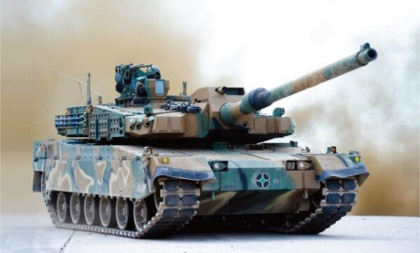

나의 비전은 나의 이야기

K2 흑표(Black Panther)
대한민국 육군의 최신예 3.5세대 전차. K1의 후계 기종으로 개발되어 2014년 실전배치됬다
한눈에 보는 K2 제원
국가
대한민국
개발년도
2007
배치
2014년 7월 1일
크기
전장 7.5m(포신포함 10.8m)
전폭 3.6m, 전고 2.4m
승무원
3명 (전차장,포수,조종수)
주무장
55구경장 120mm CN08활강포
최고속도
평지 70km/h, 야지 50km/h
엔진
MT-883 ka-501
1500마력
차기에 폴란드와 다양한 국가에 수출하기 위해 연구중에 있다
해당 사진은 폴란드 수출형 K2PL
\
K2전차의 훈련 영상